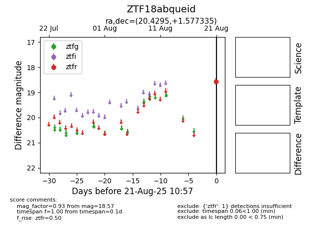

Target ZTF18abqueid at 2025-08-21 10:57, see:
FINK: fink-portal.org/ZTF18abqueid
Lasair: lasair-ztf.lsst.ac.uk/objects/ZTF18abqueid
ALeRCE: alerce.online/object/ZTF18abqueid
alt names
ZTF18abqueid (ztf,alerce)
coordinates:
equatorial (ra, dec) = (20.4295,+1.57733)
galactic (l, b) = (138.3858,-60.38270)
photometry
last ztfr=18.57
1 ztfr detections
